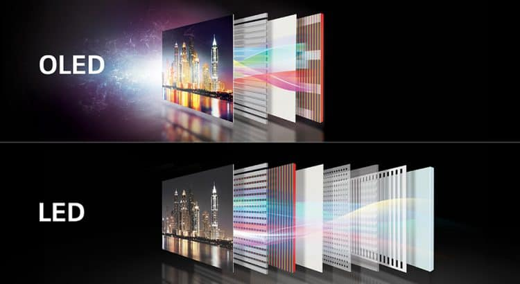
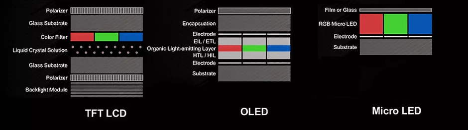

NIEČO K LED, OLED A MICROLED DISPLEJOM
LED, ALEBO SVETLO VYŽARUJÚCA DIÓDA
V začiatkoch boli používané predovšetkým v sedem segmentových displejoch. Táto technológia bola veľmi drahá a preto sa používala len v najdrahších laboratórnych zariadeniach. Postupom času sa stali lacnejšími aj pre použitie v telefónoch, rádiách, kalkulačkách...
LED displeje sú špeciálny druh LCD kde nasvietenie je riešené LED diódami. Každý pixel je reprezentovaný 3 diodami, červenou, zelenou,modrou. Tieto displeje sú energeticky úspornejšie a oveľa menšie než LCD, takisto majú aj lepšiu kvalitu obrazu ale sú drahšie. Existujú 3 hlavné nastavenia zadného svetla pre LED displeje.
1. ÚPLNÉ VYPLNENIE ZADNÉHO PANELU LED-KAMI
Táto metóda sa považuje za najlepší typ podsvietenia ale nachádza sa iba na obmedzenom počte modelov pretože je drahšia. Na celej obrazovke sú rovnomerne pokladané LED-ky a dajú sa efektívnejšie zatieňovať.
2. LED IBA NA OKRAJI
Najbežnejšia metóda. Diódu sú poukladané buď okolo celého okraja alebo iba na stranách. Nevýhoda pri tomto použití je že stred displeja je tmavší ako jeho okraje.
3. PRIAME OSVETLENIE
Táto metóda je najlacnejšia, je podobná metóde úplneho vyplnenia s tým že teraz je použitý menší počet LED-iek a nie je možné ich zatieňovať tak efektívne.

ORGANICKÉ SVETLO VYŽARUJÚCA DIÓDA - OLED
Táto technológia má síce v názve LED ale veľmi sa od nej líši. Panely sú vyrobené z organických materiálov ktoré vyžarujú svetlo keď cez ne prúdi elektrina. Vďaka týmto materiálom majú OLED vyšší kontrast, jas, rýchlu obnovovaciu frekvenciu a môžeme sa naň pozerať z uhla až 170° s minimálnou stratou na kvalite. Pri OLED pixely vyžarujú svoje vlastné svetlo, každý pixel je možné úplne vypnúť a šetriť tak elektrickú energiu. OLED panely sa vyznačujú predovšetkým tým ako dokážu zobraziť farby, môžeme dokonca zobraziť aj skutočnú čiernu farbu.
Štruktúra OLED panelu je jednoduchá, využívajú sa 2 vrstvy organických fólií na báze uhlíka ktoré sú medzi dvoma elektródami anódou a katódou, všetko sa nachádza na substráte ktorý môže pozostávať zo skla alebo plastu. OLED panely majú veľmi tenkú konštrukciu, sú veľmi flexibilné a odolné. Existujú aj transparentné panely s takmer 90% priehľadnosťou.
Využitie OLED nezostalo len pri televízoroch, vďaka vysokému jasu by mohli nahradiť tradičné fluorescenčné svetlá používané všade okolo nás. Ich použitie môže potenciálne znížiť výdaje za energiu to ale len predpokladu že by sa stali cenovo dostupnejšími.
Cena OLED panelov za posledné roky dosť klesla stále je však vysoká oproti iným technológiám. Ďalšou nevýhodou je výdrž pixelov ktoré sa postupom času opotrebujú a už nesvietia tak ako od výroby môže sa tiež stať že pokiaľ máme zapnutý stále jeden program na televízií do obrazu sa vypáli vodový znak a aj po prepnutí programu nám tam ostane.
OLED panely sa môžu vytvárať troma spôsobmi:
1. Vákuovým odparovaním, kedy sa organické molekuly zahrievajú a formujú do tenkej vrstvy.
2. Roznášaním organických molekúl plynom vo vnútri tlakovej komory.
3. Tlačením, princíp je rovnaký ako keď sa tlačí atrament na papier, tento spôsob je najjednoduchší ale veľmi drahý.
MICRO LED
Technológia displejov ktorá funguje zasa inak ako LED. V niektorých veciach je podobná OLED a v niektorých veciach ju prekonala. Micro LED displej sa dá tvarovať a ohýbať do nami požadovaného tvaru. Väčšie obrazovky sú tvorené menšímy panelmi ktoré sú na seba pripojené, takže ak sa nám pokazí nejaká časť obrazovky dá sa pomerne jednoducho vymeniť. Každý pixel je reprezentovaný troma LED-kami, červenou, zelenou, modrou. Nenachádzajú sa tu polarizačné vrstvy ani podsvietenie. Po celej obrazovke sú rozsprotrené tieto LED-ky a všetky sa dajú kontrolovať samostatne dajú sa aj jednotlivo vypnúť čo prispieva k šetreniu energie. Najväčší rozdiel oproti OLED je životnosť, nebude tu dochádzať k strate na kvalite a ani nám v obraze neostane vypálený vodný znak.
